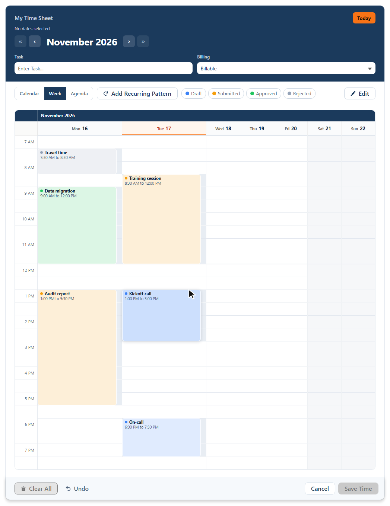
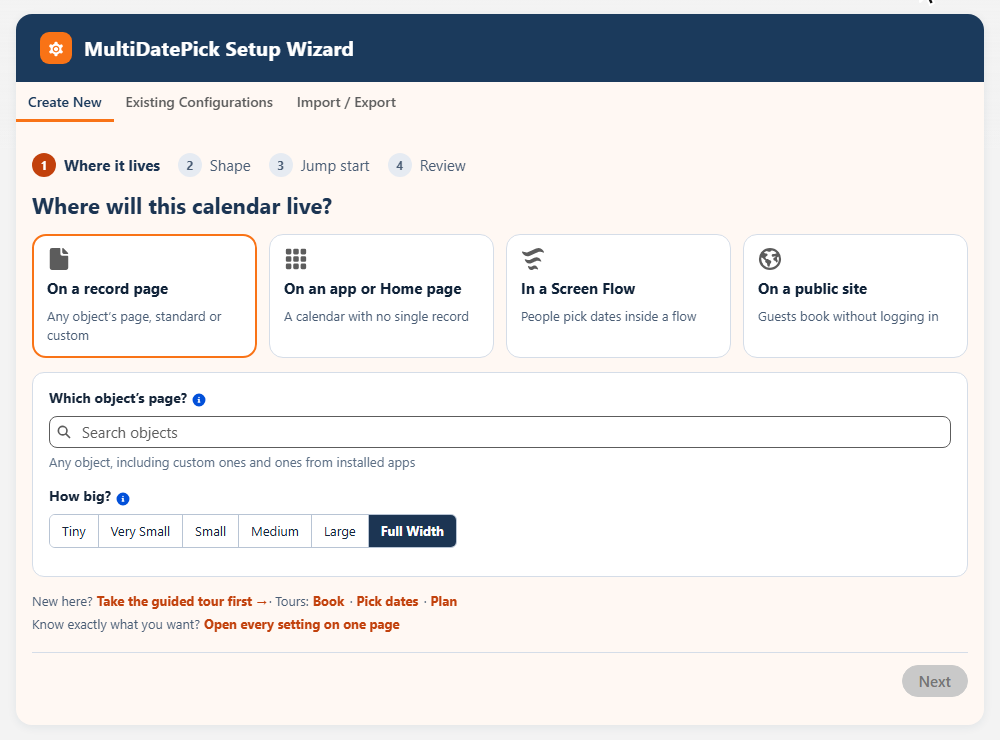
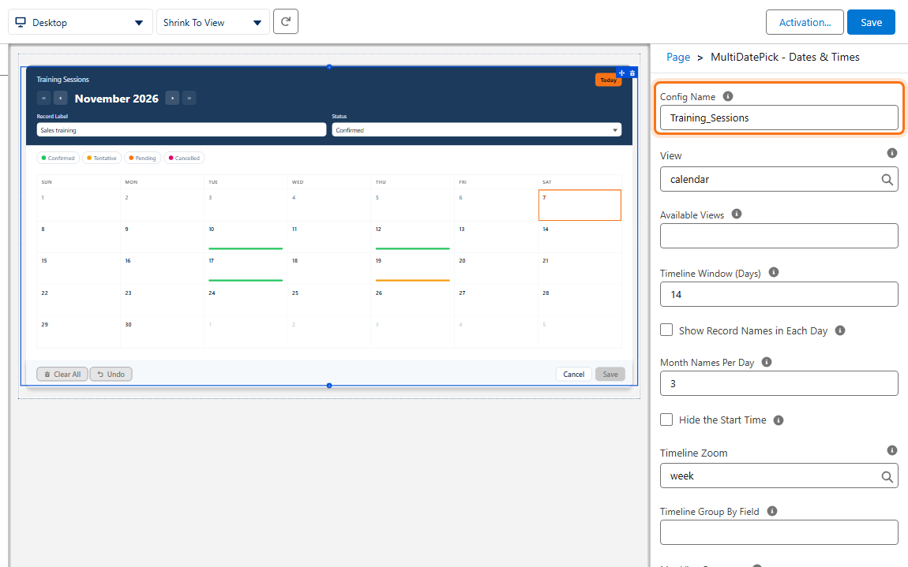
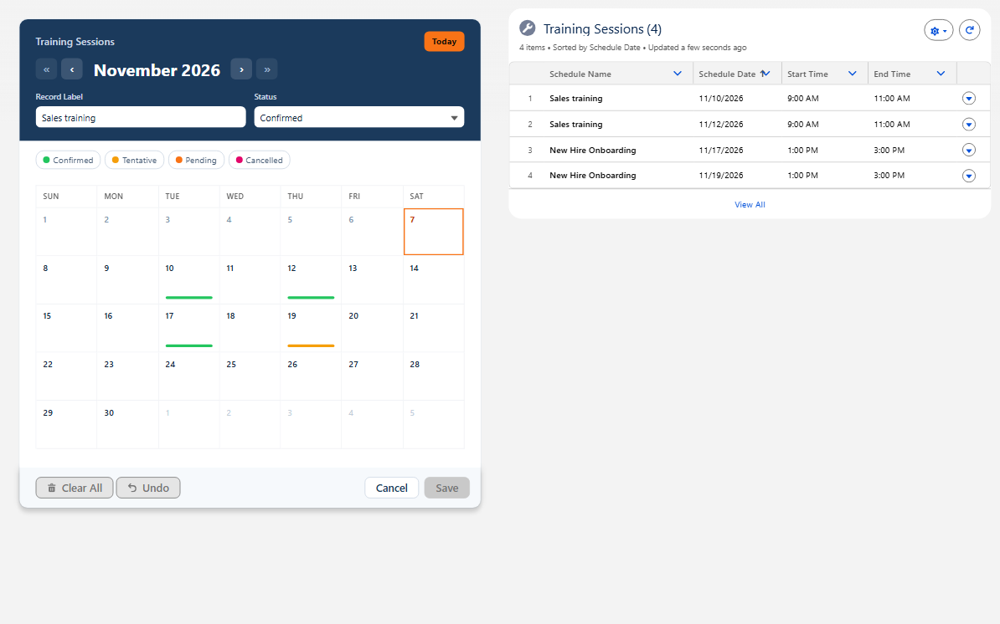
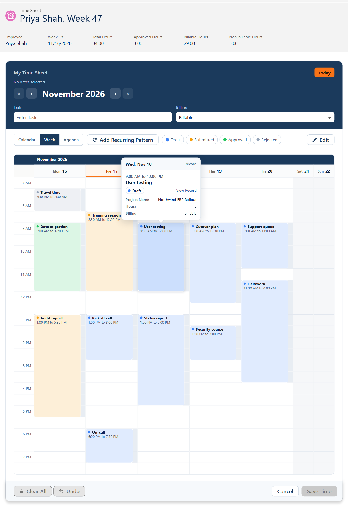
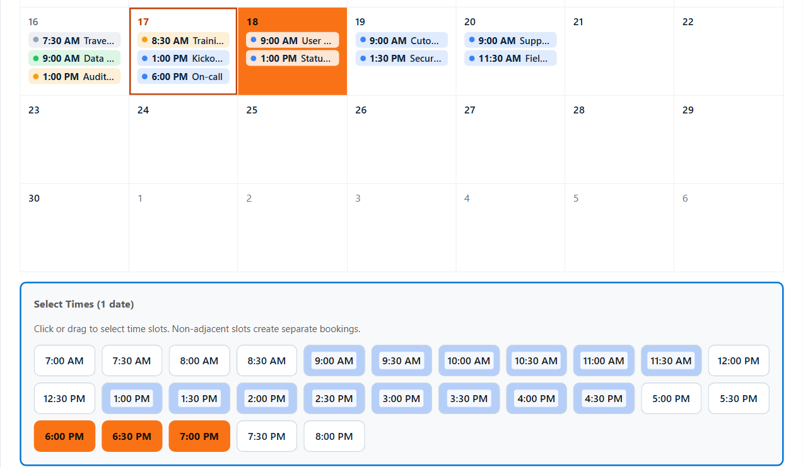
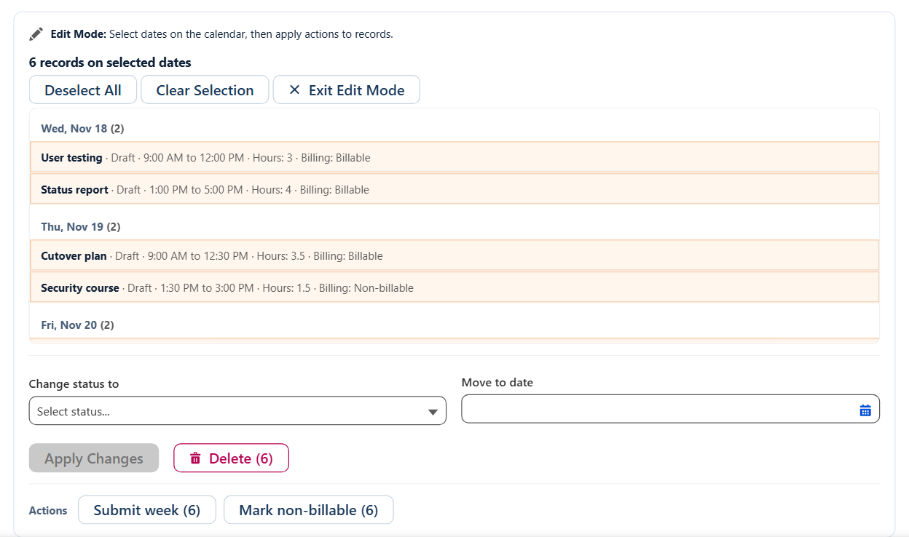
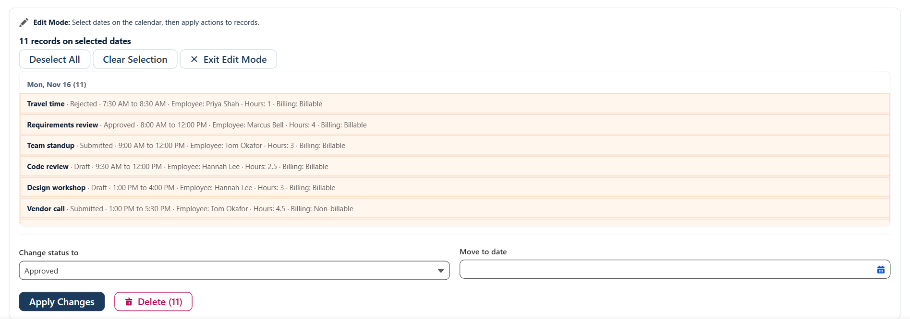

Timesheets: The Salesforce Timesheet Calendar
Log hours as blocks on a week, by project, billable or not. Every block is a Time Entry record, the week adds itself up, and managers approve in bulk.
Or try the live demo now, no login →
3 steps, 0 lines of code
No developer, no Apex, no Flow loop. An admin sets it up with clicks.
-

Import the config
Paste the Weekly Time Sheet config into the Setup Wizard and pick your own objects and fields.
How the wizard works → -

Drop it on the Time Sheet
Add the Dates & Times calendar to the Time Sheet record page and paste the Config Name.
Where it can go → -

Every block is a record
Each block of time saves as a Time Entry on your own object, ready for reports.
How it saves →
Log a week on the live demo’s Time sheets page
ACME’s IT team logs hours on projects: the same hours on several days, billable or not, approval statuses and weekly totals. Click the days, drag the hours, save.
A time entry calendar for people who live in Salesforce
A time entry in Salesforce is a record with one date field, so logging a week means one New form per block. MultiDatePick puts the week on a calendar on the person's weekly Time Sheet.
| Timesheet task | Standard Salesforce | With MultiDatePick |
|---|---|---|
| 9 to 12 and 1 to 5, three days | Six New forms | Three clicks, two drags, one save |
| Every weekday, 9 to 5 | One record at a time | Recurring pattern, then the hours |
| See the week | A list sorted by date | Week view by the hour |
| Hours for the week | Added up by hand | Roll-ups on the Time Sheet |
| Approve a day for the team | Edit each record | Edit Mode, one Apply |

More shifts when you need them
A split shift, an evening on call, a Saturday that came up: add it to the week in seconds, without touching the time already logged.
- Pick a day that has time on it: its blocks show as taken in the time grid
- Drag a second block, such as 6:00 to 7:30 PM on call, and save: one more entry
- Click extra days and save them with the same hours
- Add Recurring Pattern: every weekday up to an end date
- Allow Different Times Per Date: each picked day gets its own hours
- Max Bookings per Day: how many separate blocks a person can pick on one day (0 = no limit)
Logging shifts from a Screen Flow? The free Add Shifts starter flow takes the picked blocks and creates one record for each.

Billable vs non-billable time, and the week's totals
Billing is a picklist the person sets while logging time. The totals are Salesforce formula and roll-up fields, added in Object Manager with clicks.
| Object | Field | Type | Purpose |
|---|---|---|---|
| Time Entry | Billing | Picklist: Billable (default), Non-billable | The calendar's Second Picklist Field: picked beside the task, shown on the hover card and in the Agenda |
| Time Entry | Hours | Formula (Number) | (End_Time__c - Start_Time__c) / 3600000: 9:00 to 12:00 is 3 |
| Time Sheet | Total Hours | Roll-Up Summary (SUM of Hours) | Every entry on the sheet |
| Time Sheet | Approved Hours | Roll-Up Summary, filtered | Status equals Approved |
| Time Sheet | Billable Hours | Roll-Up Summary, filtered | Billing equals Billable |
| Time Sheet | Non-billable Hours | Roll-Up Summary, filtered | Billing equals Non-billable |
- Time Entry sits in a master-detail relationship to the weekly Time Sheet, so roll-ups update as entries save
- A Mark non-billable button in Edit Mode runs a Flow on many entries at once
- A standard report groups the entries by Billing and Project
- The approval status keeps its colors, so status and billing show together

Submit, approve, reject
The approval lives in your own Status picklist, in color, with a filter pill per status.

Start from a config
Import the Weekly Time Sheet config into the Setup Wizard, map it to your own objects and fields, and save.
Weekly Time Sheet
Time entries on the weekly Time Sheet, by project, billable or not.
- ViewWeek, with Calendar and Agenda
- Status ColorsDraft, Submitted, Approved, Rejected
- Second Picklist FieldBillable__c
- Show Recurring Pattern ButtonOn
- Record Details Pop-upProject
Shift Scheduling
Plan the shifts before the time is logged.
- Earliest / Latest Time6:00 AM to 10:00 PM
- Allow Different Times Per DateOn
- ViewWeek
Team Capacity Planning
Assign work and see who is over capacity.
- ResourceUser, active only
- Available ViewsUtilization, Week, Calendar
Two Flows to add. The config's Submit week and Mark non-billable buttons run Flows named Submit_Week and Mark_Non_Billable. Each takes the picked entries' recordIds and sets one field. Build them in Flow Builder, or remove the buttons in the wizard's Actions step.
Salesforce timesheet questions
Short answers to what people search.
How do I build a timesheet in Salesforce?
Create a weekly Time Sheet object and a Time Entry object in a master-detail relationship to it, with a date, a start time, an end time, a status and a project. Put the MultiDatePick Dates & Times calendar on the Time Sheet record page with the Weekly Time Sheet config, and every block of time a person drags saves as a Time Entry under that sheet.
Can I add a second shift to a day that already has time logged?
Yes. Pick the day again: its logged blocks show as taken in the time grid, and a new block, such as an evening on call, saves as one more Time Entry. Extra days are added the same way. Max Bookings per Day sets how many separate blocks a person can pick on one day.
How do I total timesheet hours in Salesforce?
Add an Hours formula to the Time Entry, (End_Time__c - Start_Time__c) / 3600000, and a Roll-Up Summary on the Time Sheet that sums it. Filtered roll-ups give Approved Hours, Billable Hours and Non-billable Hours.
How do I separate billable and non-billable hours?
Add a Billing picklist to the Time Entry and set it as the calendar's Second Picklist Field. People choose Billable or Non-billable while logging time, it shows on every entry, and two filtered roll-ups total each kind.
How much does MultiDatePick cost?
$25 per user per month for every component and feature, with a 30-day free trial and no card required.
Log the week on a calendar
Try the live demo now, or tell us where to send the launch note.
$25/user/month, 30-day free trial, no card required.